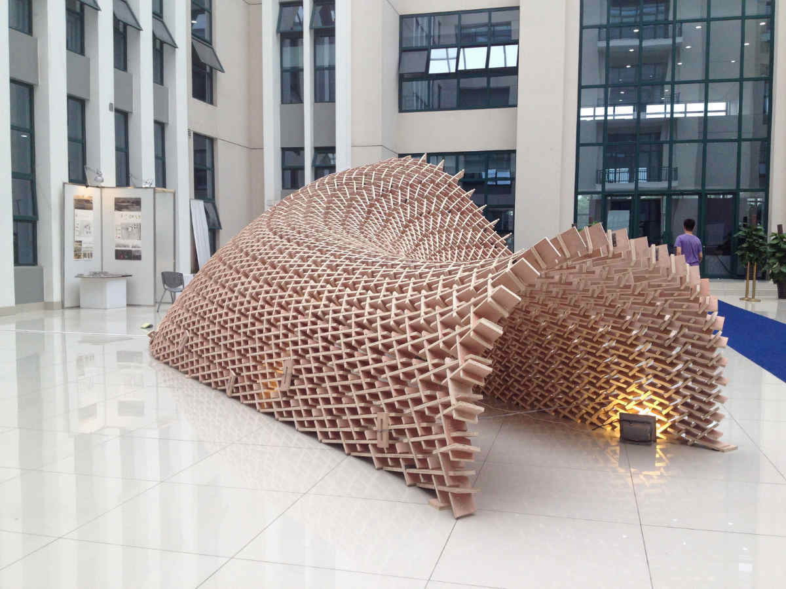

<div class="row">
  <div class="col-sm-12">
    <div id="carouselExampleControls" class="carousel slide" data-ride="carousel">
      <ol class="carousel-indicators">
        <li data-target="#carouselExampleControls" data-slide-to="0" class="active"></li>
        <li data-target="#carouselExampleControls" data-slide-to="1"></li>
        <li data-target="#carouselExampleControls" data-slide-to="2"></li>
        <li data-target="#carouselExampleControls" data-slide-to="3"></li>
        <li data-target="#carouselExampleControls" data-slide-to="4"></li>
        <li data-target="#carouselExampleControls" data-slide-to="5"></li>
        <li data-target="#carouselExampleControls" data-slide-to="6"></li>
        <li data-target="#carouselExampleControls" data-slide-to="7"></li>
        <li data-target="#carouselExampleControls" data-slide-to="8"></li>
        <li data-target="#carouselExampleControls" data-slide-to="9"></li>
      </ol>
      <div class="carousel-inner" role="listbox">
        <div class="carousel-item active">
          
        </div>
        <div class="carousel-item">
          
        </div>
        <div class="carousel-item">
          
        </div>
        <div class="carousel-item">
          
        </div>
        <div class="carousel-item">
          
        </div>
        <div class="carousel-item">
          
        </div>
        <div class="carousel-item">
          
        </div>
        <div class="carousel-item">
          
        </div>
        <div class="carousel-item">
          
        </div>
        <div class="carousel-item">
          
        </div>
      </div>
      <a class="carousel-control-prev" href="#carouselExampleControls" role="button" data-slide="prev">
        <span class="carousel-control-prev-icon" aria-hidden="true"></span>
        <span class="sr-only">Previous</span>
      </a>
      <a class="carousel-control-next" href="#carouselExampleControls" role="button" data-slide="next">
        <span class="carousel-control-next-icon" aria-hidden="true"></span>
        <span class="sr-only">Next</span>
      </a>
    </div>

    <div class="main-text hidden-xs">
      <div class="col-sm-12 projDesc">
        <h2>UNNC PAVILION</h2> <br><br>
        <p>Ningbo, China 2014 <br> <br>
        The images here show the result of a series of intensive workshops independently organized and conducted at the University of Nottingham Ningbo China campus. The students were taught from a basic understanding of 3D modeling to specific computational methods, including physics simulations, finite element analysis, and output for CNC fabrication, all with a focus on a final reciprocal frame pavilion to be constructed out of 18mm plywood without the use of hardware.  The pavilion was designed to host an opening ceremony and end-of-year exhibition to celebrate the first graduating class of of undergraduates in the school of architecture as well as the 10 year anniversary of the campus.  The United Nathans offered instruction and guidance throughout the process, both digital and physical (in the form of models and mockups), and worked with the students collaboratively to make design decisions for the exhibition space planning, as well as material considerations, notch joint adjustments, numbering and assembly strategies, etc.<br>
        Faculty and staff: Nathan Melenbrink, Samo Pedersen, Shibu Raman, Colin Rowe, James Mansfield <br> 
        Students: Chang Chang, Chuang Chieh-Yu, Cindy Wei Ping Lai Tong, Dekai Zhang, Enran Zhang, Hangyang Zhou, Hao Chen, Haochun Zeng, He Jiang, Hewei Jiang, Jingyu Xu, Lei Wang, Lisa Heller, Peng Luo, Qi Zhao, Tianyi Wang, Titi Fang, Shangfeng Lin, Weizhe Wang, Xiaohan Yang, Xingchen Li, Ying Cui, Yiran Zhang <br> 
        Photos Nathan Melenbrink, Samo Pedersen and Shibu Raman  <br> <br>
        <a href='../14_unnc/home'>Link</a> &nbsp; More Info: <a href='https://www.frameweb.com/news/reciprocal-frame-by-nathan-melenbrink-samo-pedersen-and-shibu-raman'>Frame</a>
        </p>
     </div>
    </div>
  </div>
</div>